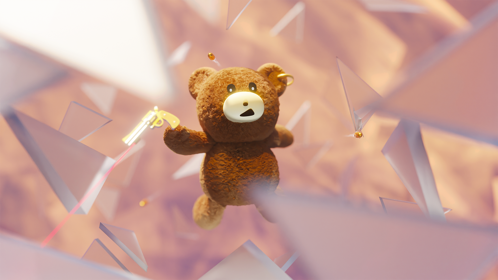
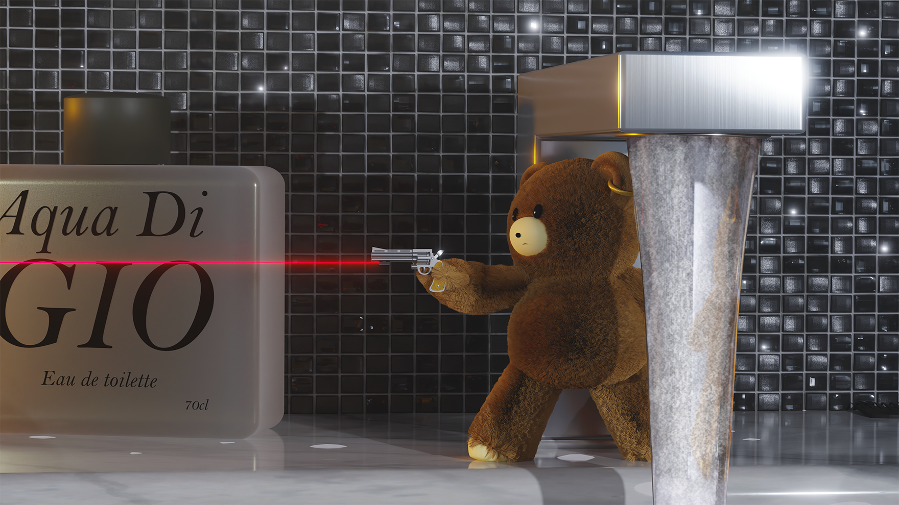
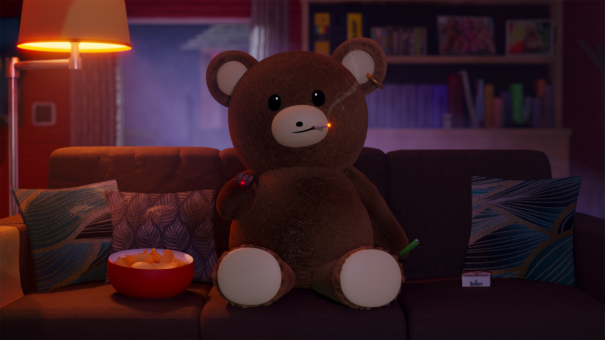
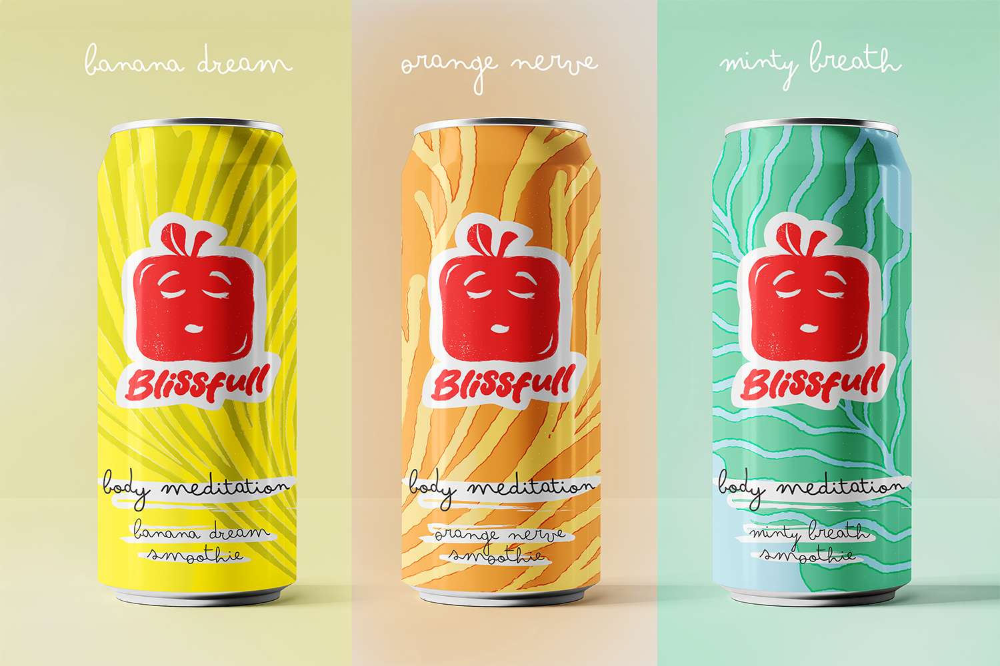
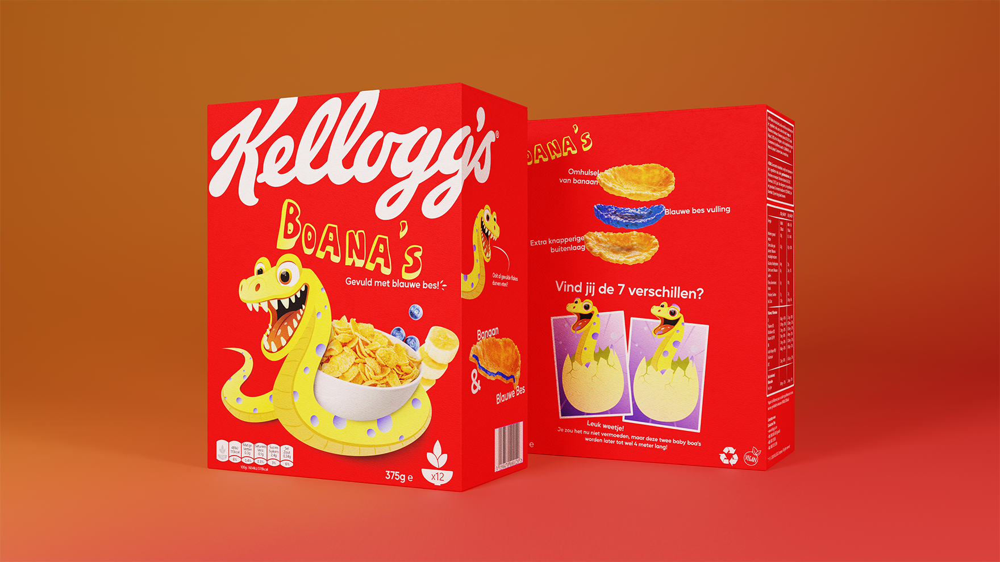
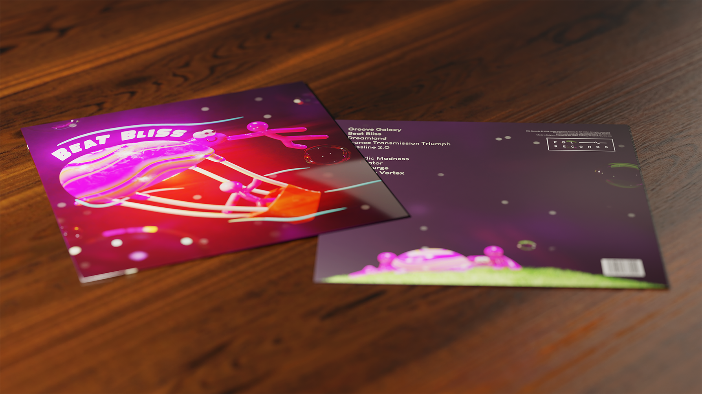
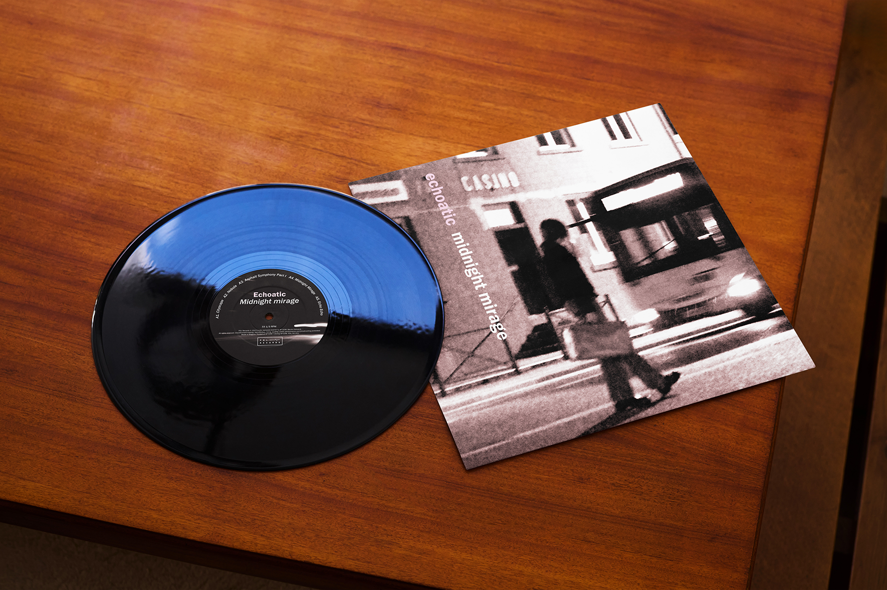
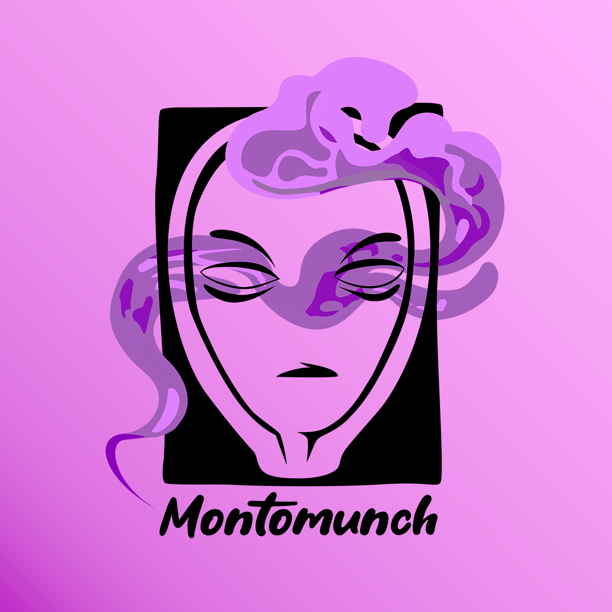

GROENER GRAS EVENT VISUAL
Freelance project
Groener Gras is een scoutsevenement dat elke lente tot leven komt met een flinke dosis positiviteit, een goeie sfeer en stevige tunes tot in de late uurtjes.
Die energie en vrolijkheid vertaalde ik naar de visual met felgroen gras en kleurrijk bloeiende bloemen. Deze frisse, levendige elementen contrasteren sterk
met de donkere achtergrond, die het nachtelijke karakter van het evenement benadrukt. Zo ontstaat een visueel spanningsveld tussen de uitbundige sfeer van
overdag en de donkere, energieke sfeer van het feest dat ’s nachts verdergaat.



FRED KARAKTER TEST
Concept

BLISSFULL SMOOTHIE COLLECTIE
School project
De Blissfull collectie is een reeks van 3 verschillende smoothies. Met de baseline "Body meditation" begrijp je meteen wat de essentie van Blissfull is;
je lichaam tot rust brengen.
Deze key visual vertaalt de rust en sereniteit waar Blissfull voor staat. Een gebalanceerde en rustige compositie zorgt voor een gevoel van harmonie en ontspanning.
Boven elk blikje komt de bijhorende smaak tot leven, waardoor de verschillende varianten op een subtiele maar herkenbare manier in beeld worden gebracht.
**fictief product**
**fictief product**

KELLOGGS BOANA'S CONCEPT
School project


PLATENHOES CONCEPT
School project
Boana’s is een gloednieuw cornflakesconcept van Kellogg’s dat inspeelt op de groeiende vraag naar een gezonder en bewuster voedingsaanbod.
De combinatie van een smeuïge bosbessenvulling en een krokant banaankorstje vormt de basis van het product én de visuele identiteit.
Ook de naam ‘Boana’s’ speelt hierop in: een speelse woordcombinatie van boa en banana.
Op de verpakking worden deze elementen samengebracht door een opvallende mascotte die het product een eigen karakter geeft.
De kleurrijke en speelse uitstraling zorgt ervoor dat Boana’s meteen in het oog springt tussen de andere producten in het winkelrek.
**fictief product**
**fictief product**

MONTOMUNCH LOGO CONCEPT
Freelance project